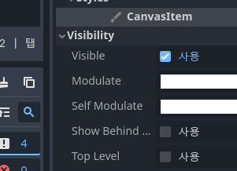
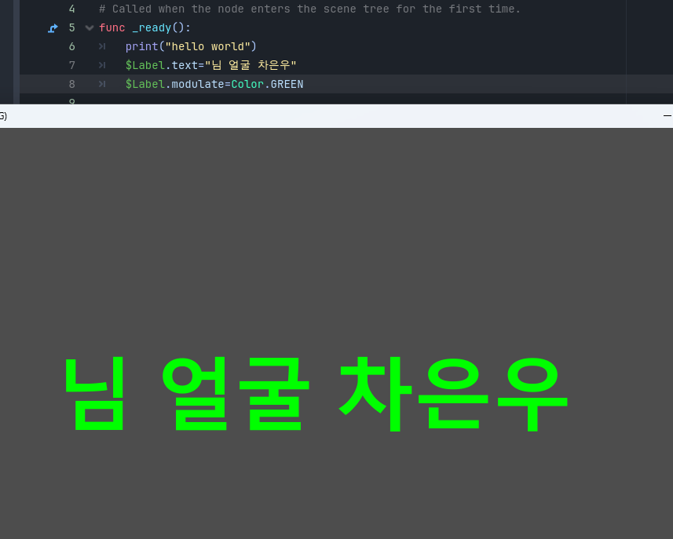

고도 GDScripts 튜토리얼11

이번에는 텍스트의 색깔에도 접근해볼거임!
Label을 클릭 후 아까 Font Sizes의 바로 밑이야!
오른쪽 하단의 CanvasItem에서 Modulate에 다른 색으로 초기화 해볼거임!

main.gd에서 $Label.modulate=Color.GREEN 을 작성하고 실행시켜봐!
텍스트의 색상이 바뀐 것을 알 수 있어!
버튼을 누르세요!